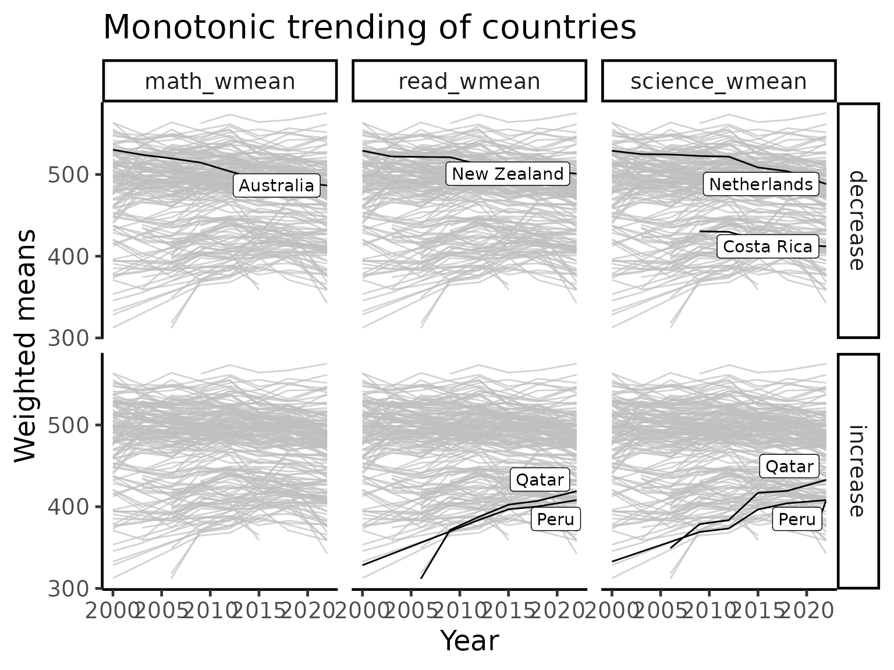
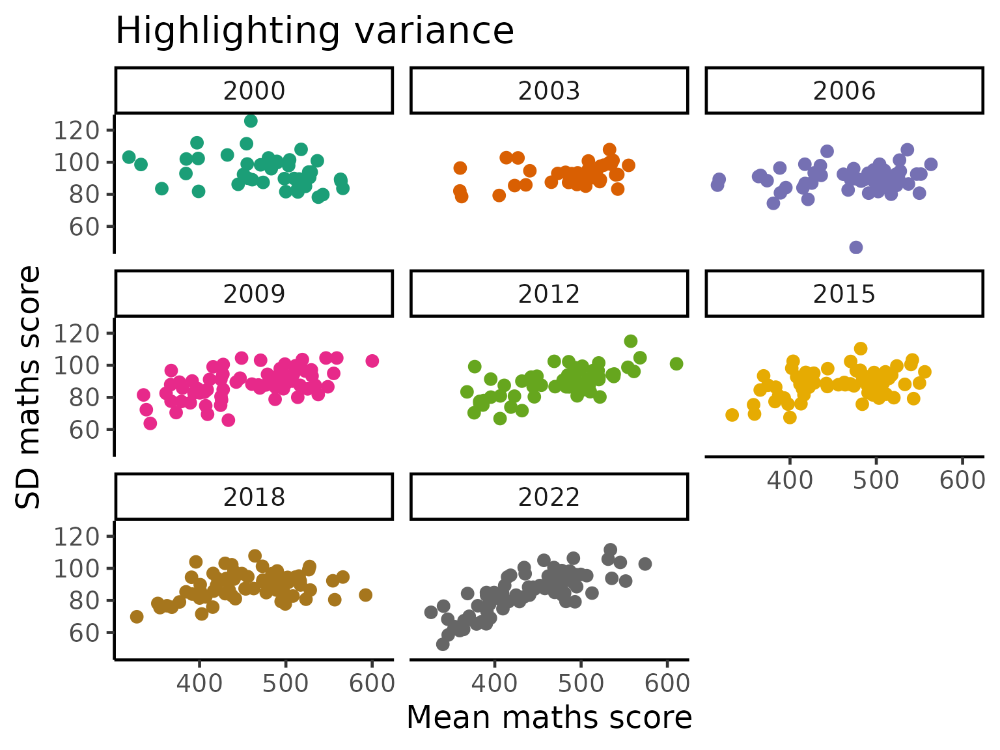
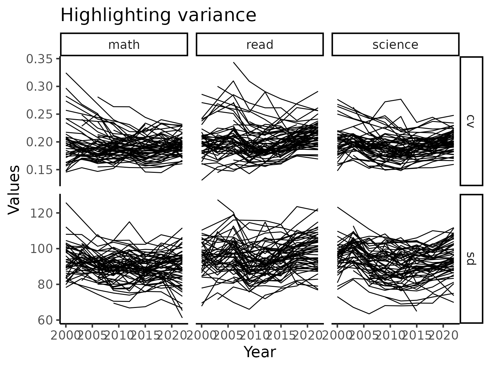
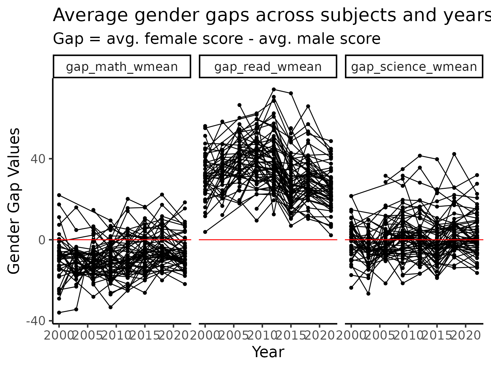
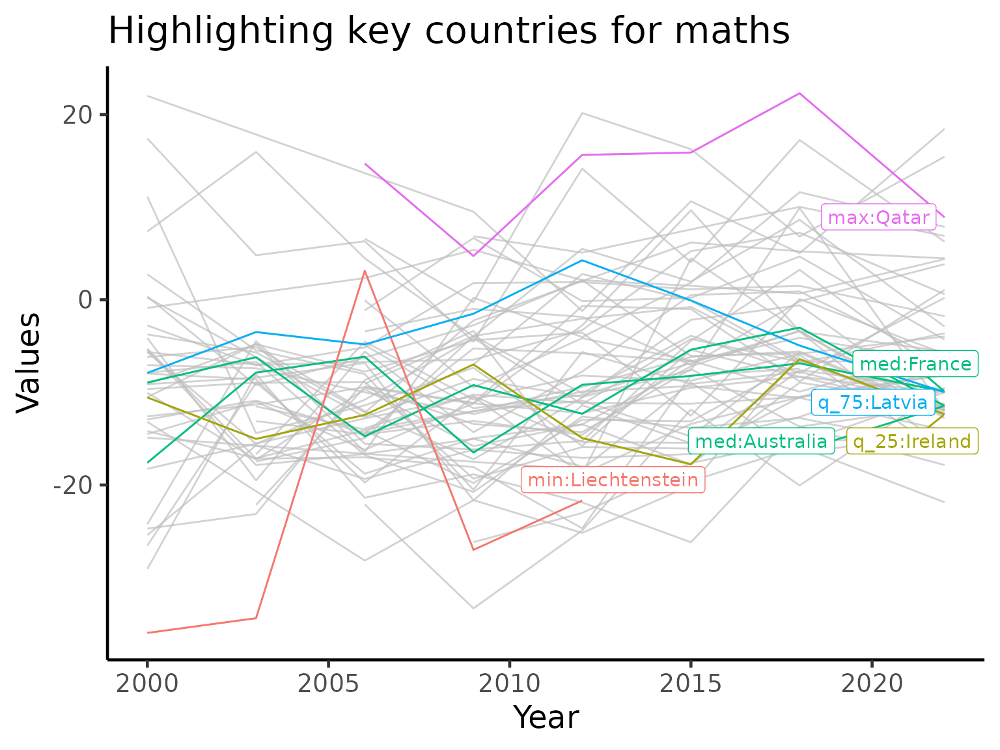

Exploring temporal trends
The Freemasons
2024-10-10
Source:vignettes/articles/exploring_time.Rmd
exploring_time.RmdIntroduction
One of the most interesting thing that we can explore in this PISA data are the temporal trends for each country/region.
Loading packages and data
#loading the data and libraries
library(learningtower)
library(tidyverse)
library(patchwork)
library(brolgar)
library(gghighlight)
library(ggrepel)
library(tsibble)
library(kableExtra)
student <- load_student("all")
data(countrycode)
theme_set(theme_classic(18) +
theme(legend.position = "bottom"))Basic time series visualisation
We begin by visualizing the time series trend of countries independent of when and for how long they participated in the PISA survey. The following code computes the weighted means of each subject (maths, reading, and science) for each country and year. The weighted averages are then plotted as three time series plots, with each joined line in the plots representing a country’s performance in that subject throughout the time that they participated in the PISA research.
#calculating the weighted means for all three subjects and plotting them
w_mean = function(x, w){weighted.mean(x = x, w = w, na.rm=TRUE)}
stu_summ = student %>%
group_by(year, country) %>%
summarise_at(.vars = vars(math, read, science),
.funs = list(wmean = ~w_mean(., w = stu_wgt),
min = ~min(., na.rm = TRUE),
max = ~max(., na.rm = TRUE))) %>%
ungroup() %>%
dplyr::mutate(year = year %>% as.character() %>% as.integer)
stu_wmean_long = stu_summ %>%
select(year, country, contains("wmean")) %>%
pivot_longer(cols = contains("wmean"),
names_to = "wmean_names",
values_to = "wmean_values")
stu_wmean_long %>%
ggplot(aes(x = year, y = wmean_values, group = country)) +
geom_line() +
facet_wrap(~wmean_names) +
labs(x = "Year", y = "Weighted mean values",
title = "Weighted means of countries in all subjects")Australia, New Zealand, Indonesia
A core of this package was built at the 2019 OzUnconf in Australia. Hence, we focus on three countries in the APAC region for more detailed visualizations. In the plot below, the dark line is the weighted mean score of each country for each subject. The shading indicates the minimum and maximum of scores for a given year. We can see that when looking at range of scores, the variations in the mean of the data is almost negligible. We explore this effect in details later.
#plotting the weighted mean score with minimum and maximum range for the three countries
stu_summ_long2 = stu_summ %>%
filter(country %in% c("AUS", "NZL", "IDN")) %>%
pivot_longer(cols = math_wmean:science_max,
names_to = "names",
values_to = "values") %>%
separate(col = names, into = c("subject", "statistics"), sep = "_") %>%
pivot_wider(names_from = "statistics",
values_from = "values")
stu_summ_long2 %>%
ggplot(aes(x = year, y = wmean)) +
geom_ribbon(aes(ymin = min, ymax = max), fill = "grey70") +
geom_line(colour = "black", size = 2) +
facet_grid(subject~country, labeller = label_both) +
labs(x = "Year", y = "Test score values",
title = "Weighted means/Min and Max range")
brolgar visualisations
brolgar is a new R package that makes visualization of time series easier. We now use this package to pick out some interesting patterns in the data.
Linear model for every country
We now consider fitting a linear model for every country’s performance in maths. This extracts the general trend of performance in mathematics extracted from the “spaghetti” plot above.
There are many countries/regions who did not participate in all 7 PISA studies (between 2000 to 2018, a study is conducted every three years). As we are interested in calculating linear models, we retain only those countries/regions participated in 5 or more studies.
For simplicity of interpretation, we center each country/region’s performance to the first time that country/region participated in the PISA study. Hence, the intercept terms of the linear models (x-axis in the plot below) represent the weighted means of the countries/regions when they first participated in PISA study. The slope terms of the linear models (y-axis in the plot below) represent the average annual increase in the weighted mean score for each country/region.
Based on this interpretation, it appears that if a country/region has a good initial performance in the PISA study, then that country is likely to have reach “saturation” where it is hard for it to improve any further, and thus only has a small annual increase or even a decrease.
#considering countries whose participation is 5 or more, calculating the math slope and plotting it
complete_nations = stu_summ %>%
group_by(country) %>% filter(n() >= 5) %>%
ungroup() %>%
mutate(year_subtract = year - min(year)) %>%
as_tsibble(key = country, index = year_subtract)
math_slope = complete_nations %>%
select(
year_subtract,
country,
math_wmean) %>%
key_slope(math_wmean ~ year_subtract) %>%
left_join(countrycode, by = "country")
math_slope %>%
ggplot(aes(x = .intercept, y = .slope_year_subtract)) +
geom_point() +
geom_text_repel(aes(label = country_name), size = 3) +
geom_hline(yintercept = 0, colour = "red") +
labs(x = "Weighted mean math score in first participation",
y = "Avg. increase in weighted mean score every year",
title = "Countries performance in maths") +
scale_y_continuous(limits = c(-5, 8))
math_slope_near <- math_slope %>%
keys_near(key = country, var = .slope_year_subtract)
math_slope_near %>%
kbl(caption = "Summary Statistics") %>%
kable_styling(full_width = NULL,
position = "center",
bootstrap_options = c("hover", "striped"))| country | .slope_year_subtract | stat | stat_value | stat_diff |
|---|---|---|---|---|
| FIN | -2.6708965 | min | -2.6708965 | 0.0000000 |
| IRL | -0.2089584 | med | -0.2304486 | 0.0214902 |
| LTU | -0.2519388 | med | -0.2304486 | 0.0214902 |
| POL | 0.9147179 | q_75 | 0.8408787 | 0.0738391 |
| QAT | 5.7360433 | max | 5.7360433 | 0.0000000 |
| USA | -1.0037173 | q_25 | -0.9597568 | 0.0439605 |
Highlighting monotone countries for subjects
There are some countries, since their initial participation in the
PISA study, always exhibit monotone trending (increase or decrease). We
use the brolgar package to highlight these countries.
Quite interestingly, the countries exhibiting monotone decreasing patterns are Australia, New Zealand and Netherlands. Despite this decreasing pattern, all three countries remain on the top of the world in terms of their performance. This is consistent with the idea of “saturation” above as we can see a cluster of countries towards the top of the score range of each subject. On the other hand, Qatar and Peru are the two countries that massively improved their performance since the PISA study began.
#plotting increasing and decreasing patterns in countries for all three subjects
feature_monotone = complete_nations %>%
features_at(.var = vars(math_wmean, read_wmean, science_wmean),
features = feat_monotonic) %>%
dplyr::select(country, contains("increase"), contains("decrease"))
feature_monotone_long = feature_monotone %>%
pivot_longer(cols = -country,
names_to = "names",
values_to = "monotone_value") %>%
separate(col = names, into = c("subject", "direction"), sep = "_(?!.*_)")
plot_tbl = complete_nations %>%
as_tibble() %>%
select(year, country, math_wmean, read_wmean, science_wmean) %>%
pivot_longer(cols = contains("_wmean"),
names_to = "subject",
values_to = "wmean_value") %>%
left_join(feature_monotone_long, by = c("country", "subject")) %>%
left_join(countrycode, by = "country")
plot_tbl %>%
ggplot(aes(x = year,
y = wmean_value,
group = interaction(country, subject))) +
geom_line() +
gghighlight::gghighlight(monotone_value, label_key = country_name) +
facet_grid(direction~subject) +
labs(x = "Year",
y = "Weighted means",
title = "Monotonic trending of countries")
Highlighting variance
As the PISA study spans multiple countries, schools and across time, there is a huge amount of variations in the data that the simple linear analyses above are not able to fully capture. Here, we turn our attention to the variability themselves and visualize these. We primarily use standard deviation and coefficient of variation to visualize the general trends of countries/region over time.
student %>%
group_by(year, country) %>%
summarise_at(
.vars = vars(math, read, science, wealth, escs),
.funs = list(
mean = ~ mean(., na.rm = TRUE),
sd = ~ sd(., na.rm = TRUE))) %>%
ggplot(aes(x = math_mean, y = math_sd, colour = year)) +
geom_point(size = 3) +
scale_colour_brewer(palette = "Dark2") +
labs(x = "Mean maths score",
y = "SD maths score",
title = "Highlighting variance") +
facet_wrap(~year) +
theme(legend.position = "none")
cv = function(x){
sd(x, na.rm = TRUE)/mean(x, na.rm = TRUE)
}
stu_var_summ = student %>%
group_by(year, country) %>%
summarise_at(
.vars = vars(math, read, science),
.funs = list(
sd = ~ sd(., na.rm = TRUE),
cv = ~ cv(.))) %>%
dplyr::mutate(year = year %>% as.character() %>% as.integer) %>%
group_by(country) %>%
filter(n() >= 5) %>%
ungroup()
stu_var_summ_long = stu_var_summ %>%
pivot_longer(cols = -c("year", "country"),
names_to = "names",
values_to = "values") %>%
separate(col = "names", into = c("subject", "statistic"), sep = "_")
stu_var_summ_long %>%
ggplot(aes(x = year, y = values,
group = country)) +
geom_line() +
facet_grid(statistic~subject, scales = "free_y") +
labs(x = "Year",
y = "Values",
title = "Highlighting variance")
In the plot above, we see that there countries that has high variations tend to lower as time passes by while low variations tend to stay stay that way. This implies that most countries/regions typically exhibit non-increasing pattern in terms of the quality of performance.
We now zoom into the mathematics performance (measured using coefficient of variation) panel and take a close look at the countries, highlighting certain countries of interest.
stu_var_summ = stu_var_summ %>%
as_tsibble(key = country, index = year)
stu_var_near = stu_var_summ %>%
features(math_cv, feat_brolgar) %>%
keys_near(key = country, var = median)
stu_var_plotdf = stu_var_summ_long %>%
filter(subject == "math", statistic == "cv") %>%
left_join(stu_var_near, by = "country") %>%
left_join(countrycode, by = "country") %>%
as_tibble() %>%
mutate(label_stats_country = ifelse(is.na(stat), NA, paste0(stat, ":", country_name)))
stu_var_plotdf %>%
ggplot(aes(x = year, y = values,
group = country, colour = stat)) +
geom_line() +
gghighlight::gghighlight(!is.na(stat), label_key = label_stats_country) +
labs(y = "Coeffiecent of variation across students",
x = "Year",
title = "Maths scores using coefficient of variation")
We again see Qatar appearing in this visualization. Qatar is highlighted as it is the country with a large amount of variations, implying a high level of inequality in the performance in mathematics. But what is particularly interesting here is that Qatar is consistently lowering the variation every time it participate in the PISA study. Combined with the visualizations above, we might conjecture that Qatar is not only improving its performance but also the equality of access.
Gender gap over time
One of the ongoing myth in education is that there is a difference in the performance of different subjects by gender. While this may appear true in selected cases, it is important to note gender is often a confounding variable masking the effect of some genuine underlying cause. Together with the large amount of variations in the data across socioeconomic status of different families in different countries/regions, it is never possible to draw a generalized conclusion.
That being said, we now visualize the differences in the average test scores for each gender (PISA study chose a binary coding). Across the three subjects, there are more countries with a higher average for the boys in maths. In reading, girls completely dominate in every country while performance in science is more evenly split between the genders.
stu_gender_summ = student %>%
filter(complete.cases(gender)) %>%
group_by(year, country, gender) %>%
summarise_at(.vars = vars(math, read, science),
.funs = list(wmean = ~w_mean(., w = stu_wgt))) %>%
mutate(year = year %>% as.character() %>% as.integer) %>%
group_by(country) %>%
filter(n() >= 10) %>%
ungroup() %>%
pivot_longer(cols = contains("_wmean"),
names_to = "names",
values_to = "values") %>%
pivot_wider(names_from = c("gender", "names"),
values_from = "values")
stu_ggap_summ = stu_gender_summ %>%
dplyr::transmute(
year, country,
gap_math_wmean = female_math_wmean - male_math_wmean,
gap_read_wmean = female_read_wmean - male_read_wmean,
gap_science_wmean = female_science_wmean - male_science_wmean)
stu_ggap_summ_long = stu_ggap_summ %>%
pivot_longer(cols = contains("gap"),
names_to = "gap_names",
values_to = "gap_values")
stu_ggap_summ_long %>%
ggplot(aes(x = year, y = gap_values)) +
geom_point() +
geom_line(aes(group = country)) +
geom_hline(yintercept = 0, colour = "red") +
facet_wrap(~gap_names) +
labs(title = "Average gender gaps across subjects and years",
subtitle = "Gap = avg. female score - avg. male score",
x = "Year",
y = "Gender Gap Values")
Highlighting key countries across all three subjects
stu_ggap_summ_nest = stu_ggap_summ %>%
pivot_longer(contains("_wmean"),
names_to = "names",
values_to = "values") %>%
group_by(names) %>%
nest() %>%
mutate(f_tbl = map(.x = data,
.f = ~ .x %>%
as_tsibble(key = country, index = year) %>%
features(values, feat_brolgar) %>%
keys_near(key = country, var = range2)),
f_data = map2(.x = data, .y = f_tbl,
.f = ~ left_join(.x, .y, by = "country")))
stu_ggap_summ_plotdf = stu_ggap_summ_nest %>%
select(names, f_data) %>%
unnest(f_data) %>%
left_join(countrycode, by = "country") %>%
mutate(label_stats_country = ifelse(is.na(stat), NA, paste0(stat, ":", country_name)))
stu_ggap_summ_plotdf %>%
ggplot(aes(x = year, y = values)) +
geom_line(aes(group = country, colour = country)) +
gghighlight(!is.na(stat), label_key = label_stats_country, calculate_per_facet = TRUE, keep_scales = TRUE) +
facet_wrap(~names) +
labs(x = "Year",
y = "Values",
title = "Highlighting key countries across all three subjects")
Highlighting key countries for maths only
stu_gap_math_near = stu_ggap_summ %>%
as_tsibble(key = country, index = year) %>%
features(gap_math_wmean, feat_brolgar) %>%
keys_near(key = country, var = median)
stu_gap_math_plotdf = stu_ggap_summ %>%
as_tibble() %>%
left_join(stu_gap_math_near, by = "country") %>%
left_join(countrycode, by = "country") %>%
mutate(label_stats_country = ifelse(is.na(stat), NA, paste0(stat, ":", country_name)))
p_math = stu_gap_math_plotdf %>%
ggplot(aes(x = year, y = gap_math_wmean,
group = country, colour = stat)) +
geom_line() +
gghighlight::gghighlight(!is.na(stat), label_key = label_stats_country) +
labs(x = "Year",
y = "Values",
title = "Highlighting key countries for maths")
p_math
Session info
sessionInfo()
#> R version 4.4.1 (2024-06-14)
#> Platform: x86_64-pc-linux-gnu
#> Running under: Ubuntu 22.04.5 LTS
#>
#> Matrix products: default
#> BLAS: /usr/lib/x86_64-linux-gnu/openblas-pthread/libblas.so.3
#> LAPACK: /usr/lib/x86_64-linux-gnu/openblas-pthread/libopenblasp-r0.3.20.so; LAPACK version 3.10.0
#>
#> locale:
#> [1] LC_CTYPE=C.UTF-8 LC_NUMERIC=C LC_TIME=C.UTF-8
#> [4] LC_COLLATE=C.UTF-8 LC_MONETARY=C.UTF-8 LC_MESSAGES=C.UTF-8
#> [7] LC_PAPER=C.UTF-8 LC_NAME=C LC_ADDRESS=C
#> [10] LC_TELEPHONE=C LC_MEASUREMENT=C.UTF-8 LC_IDENTIFICATION=C
#>
#> time zone: UTC
#> tzcode source: system (glibc)
#>
#> attached base packages:
#> [1] stats graphics grDevices utils datasets methods base
#>
#> other attached packages:
#> [1] kableExtra_1.4.0 tsibble_1.1.5 ggrepel_0.9.6
#> [4] gghighlight_0.4.1 brolgar_1.0.1 patchwork_1.3.0
#> [7] lubridate_1.9.3 forcats_1.0.0 stringr_1.5.1
#> [10] dplyr_1.1.4 purrr_1.0.2 readr_2.1.5
#> [13] tidyr_1.3.1 tibble_3.2.1 ggplot2_3.5.1
#> [16] tidyverse_2.0.0 learningtower_1.0.1
#>
#> loaded via a namespace (and not attached):
#> [1] gtable_0.3.5 anytime_0.3.9 xfun_0.48
#> [4] bslib_0.8.0 tzdb_0.4.0 vctrs_0.6.5
#> [7] tools_4.4.1 generics_0.1.3 fansi_1.0.6
#> [10] highr_0.11 pkgconfig_2.0.3 RColorBrewer_1.1-3
#> [13] desc_1.4.3 distributional_0.5.0 lifecycle_1.0.4
#> [16] compiler_4.4.1 farver_2.1.2 textshaping_0.4.0
#> [19] munsell_0.5.1 htmltools_0.5.8.1 sass_0.4.9
#> [22] yaml_2.3.10 pillar_1.9.0 pkgdown_2.1.1
#> [25] jquerylib_0.1.4 ellipsis_0.3.2 cachem_1.1.0
#> [28] tidyselect_1.2.1 digest_0.6.37 stringi_1.8.4
#> [31] labeling_0.4.3 fastmap_1.2.0 grid_4.4.1
#> [34] colorspace_2.1-1 cli_3.6.3 magrittr_2.0.3
#> [37] fabletools_0.5.0 utf8_1.2.4 withr_3.0.1
#> [40] scales_1.3.0 timechange_0.3.0 rmarkdown_2.28
#> [43] ragg_1.3.3 hms_1.1.3 evaluate_1.0.0
#> [46] knitr_1.48 viridisLite_0.4.2 rlang_1.1.4
#> [49] Rcpp_1.0.13 glue_1.8.0 xml2_1.3.6
#> [52] svglite_2.1.3 rstudioapi_0.16.0 jsonlite_1.8.9
#> [55] R6_2.5.1 systemfonts_1.1.0 fs_1.6.4